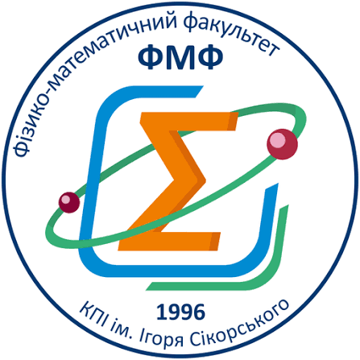

Ефект Черенкова
Роман Ткаченко · ОФ-61мп

n(λ) = A + B / λ² · λ у мкм · смуга 300–600 нм
Спектральний режим
⟨Ndet⟩
Середній радіус ⟨r⟩
Ширина σᵣ
Спектр
Пунктир — вибрана λ.
Кільця
Синє — вибрана λ. Сірі — 300, 400, 500 нм.
Про модель
Яскравість кілець умовна. Навчальне прозоре ізотропне середовище; A та B не є паспортними даними матеріалу. Ідеалізоване відображення кутів r = f tan θ, без заломлення на межі та аберацій. Довжина треку впливає на кількість фотонів; положення емісії оптично не розрізняється. Показано середні значення, а не випадкову окрему подію.